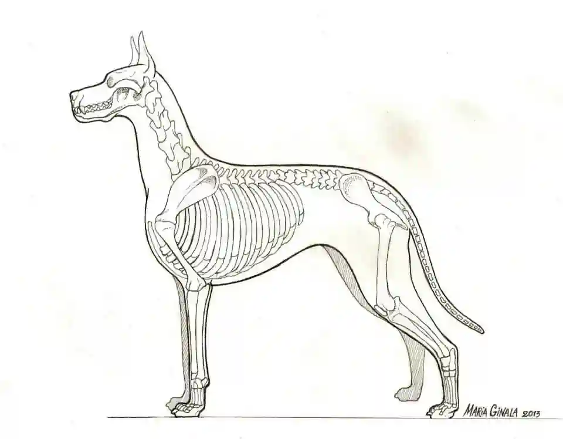
Детали строения тела собак сильно различаются от породы к породе, больше, чем у любых других видов животных, диких или одомашненных, поскольку собаки различаются по росту, весу, пропорциям головы и тела, длине хвоста и др.
С зоологической точки зрения, порода немецкий дог (англ. - Great Dane, нем. - Deutsche Doggen) относится к собакам (англ. – dog, нем. – doggen, лат. - Canis lupus familiaris) — плацентарным млекопитающим отряда хищных (лат. Carnivora) семейства псовых (лат. Canidae).
Немецкий дог принадлежит к рабочим породам, он был выведен человеком для охоты и охраны.
Будучи представителем хищных млекопитающих, у дога мощные мускулы и сердечно-сосудистая система, обеспечивающие бег, выносливость, а также большие зубы для ловли, удержания и разрыва. Ноги могут быстро толкать тело вперед, при необходимости прыгая, чтобы преследовать и догонять добычу. Передние лапы более подвижные и гибкие, только мышцы прикрепляют их к туловищу. У собак имеется выйная связка, отходящаю от гребня 2 шейного позвонка и прикрепляющаяся к остистому отростку 1 грудного позвонка, которая поддерживает вес головы без активной мышечной нагрузки, тем самым экономя энергию. Эта связка позволяет собакам высоко нести голову при беге на большие расстояния, например, следуя по следам запаха носом к земле, не затрачивая много энергии.
По размерам (длине) головы доги относятся к мезоцефалам. Скелет формируется до 16-18 месяцев.
У собак нет аналога ключицы человека, это позволяет увеличить длину шага при беге и прыжках. Собаки ходят на четырёх пальцах. Пятый палец на задней ноге называется прибылым и является нежелательным элементом анатомии породистого животного.
В начале 21 века исследователями выявлен ген, отвечающий за размер собак. Регуляторная последовательность рядом с геном инсулиноподобного фактора роста 1 (IGF1) «является основным фактором, влияющим на размер тела во всех малых собаках». Возраст гена уменьшающего размер собак менее 12 000 лет, у волков он не встречается.
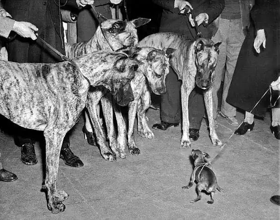
Домашняя собака является одной из потенциальных моделей для понимания генетических основ эволюционных изменений формы млекопитающих. Одомашнивание и искусственный направленный отбор по фенотипическим и поведенческим признакам привели к морфологическому разнообразию домашней собаки, не имеющему аналогов ни у одного из диких видов млекопитающих. Примерно за 15 000 лет уровень морфологического различия между породами собак стал значительно выше различия между многими родами диких канид. Сегодня 400 с лишним пород собак различаются по размерам, форме черепа и модификациям посткраниального скелета (в частности, костей конечностей) в такой степени, что при обнаружении их останков в дикой природе можно было бы говорить о видовых, а в некоторых случаях - родовых различиях.
Филогенетический анализ, проведенный на основе молекулярных маркеров, подтверждает происхождение домашней собаки от одного предка - волка (Canis lupus), опровергая гипотезу Дарвина. Нерешенным остается вопрос о том, произошли ли все линии собак от одной волчьей стаи или от нескольких волчьих стай. Большинство исследований вариаций в митохондриальной контрольной области предполагают, что взаимосвязь между митохондриальными линиями собак и волков является результатом происхождения собак от разных стай волков с последующей интрогрессивной гибридизацией между собаками и волками. Исследование вариаций в локусе Mhc (Major histocompatibility) также позволило предположить, что высокий уровень вариаций в этом локусе лучше всего объясняется продолжавшимся беккроссингом между собаками и волками после одомашнивания. Эти результаты, однако, не подтверждают результаты исследования, проведенного на основе митохондриальной ДНК (мтДНК), предполагающего происхождение домашней собаки из «единого генофонда», а не в результате многочисленных событий одомашнивания и продолжающейся гибридизации с волчьими стаями.
Гипотезы, связанные с географическим и временным происхождением домашней собаки, напоминают исследования, связанные с происхождением человека. Одно из препятствий, которое необходимо преодолеть, связано с противоречиями между оценками времени с момента дивергенции, основанными на данных археологии, и оценками, полученными на основе молекулярных часов. На основе калибровочной точки между волком и койотом и митохондриальных молекулярных часов время расхождения между волком и домашней собакой было оценено в диапазоне от 76 до 135 тыс. лет назад, что значительно выше, чем аналогичное время 13-17 тыс. лет назад, полученное на основе археологических данных.
Вопросы, связанные с оценкой центра происхождения домашней собаки, остаются сложными, и это опять-таки связано с тем, как интерпретировать археологические и молекулярные данные. Некоторые из самых ранних ископаемых останков, идентифицированных как собака, относятся к периоду между 12 и 17 тыс. лет назад в Европе и на Ближнем Востоке. [Европейские] исследователи проанализировали ДНК 216 древних собачьих останков Европы, в том числе 181 из эпох палеолита и мезолита. Большинство ДНК подтвердило, что их хозяева были домашними собаками, а не волками. Самый древний из них - собака 14,200-летней давности из пещеры Кесслерлох на севере Швейцарии. По ДНК и кесслерлохская собака, и все образцы собак до начала эпохи Неолита - родом из Сибири (возможно, с ничтожной дополнительной примесью ДНК европейских волков). Есть некоторые свидетельства того, что восточноевропейские популяции волков внесли свой вклад в происхождение домашней собаки. Напротив, основываясь на более высоком уровне вариаций мтДНК у собак из Восточной Азии и общем филогеографическом разделении этих вариаций, часть ученых предполагает единое восточноазиатское происхождение домашней собаки, и этот вывод согласуется с некоторыми археологическими данными.
Около 8 тысяч лет назад в Европу вторглись сельскохозяйственные народы Малой Азии и стали постепенно распространяться вверх по Дунаю и вдоль побережий Средиземного моря, почти полностью вытесняя коренных охотников и собирателей. Эти неолитические фермеры привезли с собой собственных собак, происходящих от ближневосточных волков. Это не вытеснило собак коренных жителей, но, скорее всего, собаки сибирского происхождения по многим качествам превосходили ближневосточных собак, и неолитические фермеры предпочитали собак смешаных кровей. У большинства собак европейского неолита доля ближневосточной ДНК невысока, не более одной трети. В Германии 7 тысяч лет назад эта доля всего 13%, в Дании 5 тысяч лет назад около 20%. А далее на север, в Южной Швеции, собаки полностью сибирских кровей сохраняются ещё 4800 лет назад. С миграциями Бронзового века эти европейские собаки смешанных сибирско-ближневосточных кровей вновь распространятся по всей Сибири, а изначальный сибирский тип сохранится только на Крайнем Севере.
Собака пережила два «узких места» в популяции, первое из которых связано с одомашниванием, а второе - с формированием различных пород, причем последнее ответственно за большую часть потери генетического разнообразия. Это привело к значительному увеличению неравновесия связей у собак по сравнению с человеком. Хотя маркеры мтДНК не позволяют выявить породные признаки [пока], как микросателлитные локусы, так и SNPs способны отнести отдельных чистопородных собак к определенной группе. Тем не менее, на сегодняшний день генетические маркеры не всегда удается использовать для создания хорошо обоснованных филогенетических групп пород, в первую очередь из-за того, что большинство пород различаются скорее по частоте аллелей, чем по фиксированным различиям. Поэтому реконструкция общей филогении домашних собак значительно усложняется в связи с недавним происхождением многих пород в сочетании с высоким уровнем смешения в процессе породообразования.
Расшифровка генетических причин морфологического разнообразия домашней собаки уже сейчас дает результаты. Подходы «сверху вниз», использующие картирование QTL, картирование неравновесия сцепления и анализ ассоциаций - все это методы, использующие анализ последовательности генома собаки. Такие методы позволяют обойтись без больших родословных. Этот подход оказался полезным для выявления генов-кандидатов и мутаций, ответственных за признаки, связанные, например, с пятнистостью, или гребнем шерсти у родезийских риджбеков. Эти же методы позволили выявить хромосомный регион, вариации которого, по-видимому, связаны с различиями в размерах собак. Несмотря на эти достижения сравнительной геномики и картирования с помощью маркеров, расшифровка механизмов, ответственных за возникновение форм домашней собаки, является сложной задачей.
До начала XXI века понимание происхождения пород было умозрительным, спекулятивным и зачастую основывалось на исторических записях (многие из которых не подтверждены) и археологических раскопках. Классификация пород основывалась, по большей части, на внешнем сходстве и особенностях использования. Все изменилось с началом работы подразделения сравнительной генетики национального института генетики человека, а точнее с работами Хейди Паркер. За прошедшие двадцать лет нашли научное подтверждение или опровержение многие догадки.
Во-первых, перестало вызывать сомнения, что предком собаки является серый волк. Не койот, не шакал, а волк.
Во-вторых, история собак неразрывно связана с историей человека. Не было стай диких собак, мигрировавших по миру. Собаки жили рядом или вместе с человеком и мигрировали и развивались вместе с ним, а с некоторых пор - под его контролем.
В-третьих, есть породы (числом 14), оставшиеся практически неизменными на протяжении тысячелетий, несмотря на отсутствие до середины XIX века породных барьеров. Все остальные породы - результат смешения генофонда.
В-четвертых, любую собаку на основании генетического теста можно отнести к определенной породе (в том числе дикой), или группе пород. Было показано, что вариации между породами составляют более 27% от общих генетических вариаций. Это подтверждает предположение о том, что породные барьеры привели к сильной генетической изоляции между породами, и это заметно контрастирует с гораздо более низкой генетической дифференциацией (обычно в диапазоне от 5 до 10%), обнаруженной среди человеческих популяций. Различия между породами у собак находится на высокой границе диапазона, отмеченного для популяций домашнего скота.
В-пятых, существующие классификации AKC и FCI, основывающиеся на умозрительных заключениях, не подтверждаются с научной точки зрения.
Что касается дога, его происхождение не связано с грейхаундом и мастифом. Среди его генетических родственников - сенбернар, бернская собака и ротвейлер. Самые близкие родственники (это подтверждается историческими записями) - риджбек, ирландский волкодав. Данные о гибридизации выявляют родственные связи с ирландским терьером. Молоссы являются дальними родственниками.
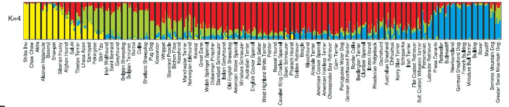
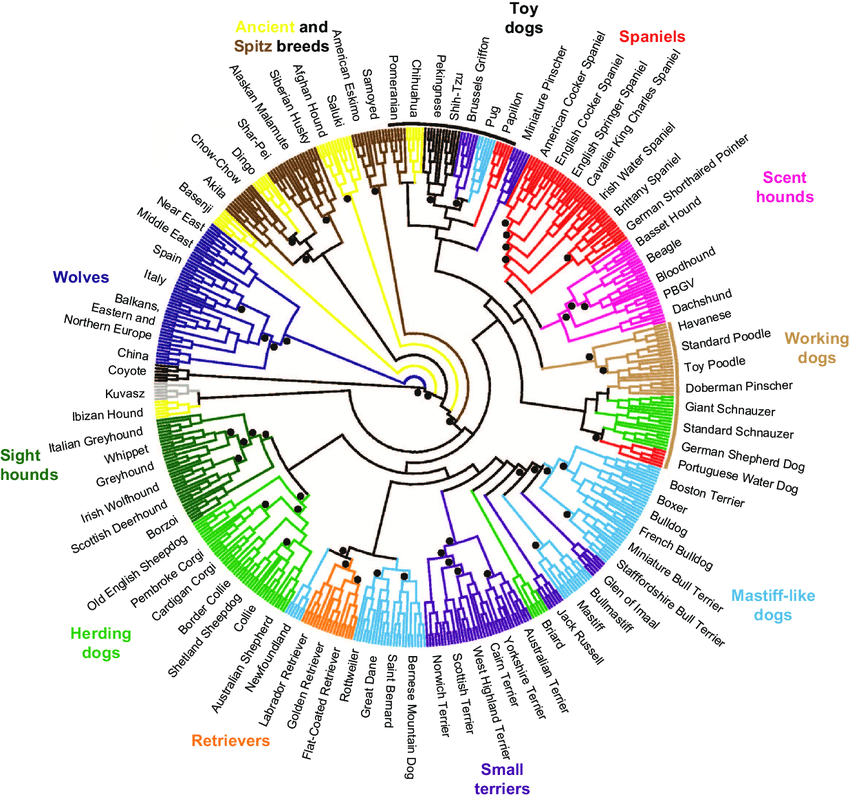
Плоская разветвленная топология генетического дерева собак, вероятно, отражает в значительной степени одного предка и возникновение обширного потока генов генов между фенотипически несхожими собаками до появления породных клубов и барьерных правил. Кроме того, это, вероятно, отражает тот факт, что некоторые исторически более старые породы, вымершие во время голода, депрессий и войн XIX и XX веков, были воссозданы с использованием поголовья фенотипически схожих или исторически родственных собак. В то же время филогенетический анализ показал отделение нескольких пород с древним происхождением от большой группы пород с предположительным современным европейским происхождением. Внутри породной группы могут существовать дополнительные подгруппы, которые не были обнаружены при таком подходе по крайней мере, по двум причинам. Во-первых, истинная история эволюции пород собак не очень хорошо представлена моделью бифуркационного дерева, предполагающей, что существующие породы были результатом смешения для создания новых пород (процесс, который продолжается и сегодня). Во-вторых, методы, основанные на матрицах генетических расстояний, не принимают во внимание филогенетическую информацию, поскольку сводят все данные о генотипах для пар пород в одно число.
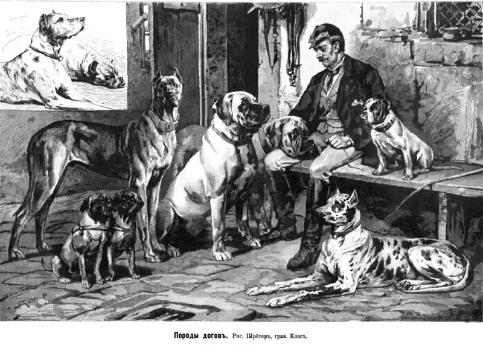
Породы собак традиционно группируются на основе их роли в человеческой деятельности, фенотипа и исторических записей. Генетики определили независимую классификацию, основанную на закономерностях генетической вариаций. Эта классификация поддерживает подмножество традиционных группировок, а также выявляет ранее неизвестные связи между породами. Точное понимание генетических связей между породами закладывает основу для исследований направленных на раскрытие сложной генетической основы породных различий в морфологии, поведении и восприимчивости к заболеваниям.
Как минимум четырнадцать пород возникли в глубокой древности и ведут свою происхождении из Азии или Африки. Все породы отличаются друг от друга генетически, и отдельные особи могут быть легко отнесены к породам на основе анализа их генотипов. Такой уровень дивергенции удивителен, учитывая очень короткое время, прошедшее с момента возникновения большинства пород от общих предков и подтверждает сильную репродуктивную изоляцию внутри каждой породы в результате действия породного барьера. Существует по меньшей мере четыре различных породных кластера. Подгруппа пород с древним азиатским и африканским происхождения имеет значительные отличия от остальных пород и демонстрирует сходные образцы частот аллелей. На первый взгляд, удивительно, что один генетический кластер включает породы из Центральной Африки (басенджи), Ближнего Востока (салюки и Афган), Тибета (тибетский терьер и лхаса Апсо), Китая (чау-чау, пекинес, шарпеи и шитцу), Японии (акита и сиба-ину), и Арктики (аляскинский маламут, сибирский Хаски и самоед). Некоторые исследователи выдвинули гипотезу, что ранние собаки-изгои появились в Азии и мигрировали вместе с кочевыми человеческими группами как на юг, в Африку, так и на север в Арктику, параллельно с распространением по всей Азии. Этот кластер включает северные породы, которые фенотипически напоминают волка, такие как аляскинский маламут и сибирский хаски, и демонстрируют наиболее близкое генетическое родство с волком, который является прямым предком домашних собак. Таким образом, собаки этих пород являются лучшими живыми представителями генофонда предков собак. Примечательно, что что некоторые породы, которые принято считать древними, такие как фараонова собака и ибисанская гончая, не вошли в эту группу. Их часто считают самыми древними из всех пород собак, происходящими непосредственно от древних египетских собак, нарисованных на стенах гробниц более 5000 лет назад. Однако научные результаты показывают, что эти две породы были воссозданы в более поздние времена в виде комбинаций других пород. Таким образом, хотя их внешний вид соответствует древнеегипетским гончим, их геномы не подтверждают это. Аналогичные выводы применимы к норвежскому элкхаунду, который объединяется с современными европейскими породами, а не с другими арктическими собаками, несмотря на гипотезу о прямом происхождении в Скандинавии более 5000 лет назад.
Большинство пород, имеет позднее происхождение от общего европейского поголовья их предков. Хотя отдельные породы генетически различаются, они, по-видимому, возникли практически в одно и то же время. Это расхождение, отражает распространение отдельных пород из менее кодифицированных фенотипических разновидностей после введения концепции породы и создания породных клубов в Европе в Викторианскую эпоху. Более чувствительный кластерный анализ позволил выявить дополнительную генетическую структуру трех субпопуляций в этой группе. Один содержит породы, внешне похожих на мастифов, и, по-видимому, отражает общую морфологию, происходящую от общего предка. Другая включает в себя шетландскую овчарку, две бельгийские овчарки и колли, и, возможно. отражает общее пастушье поведение предков. В оставшейся популяции - множество пород, включая догов, предназначенных для различных аспектов охоты. Для этих пород исторические и породные клубные записи свидетельствуют о сильном переплетении кровных линий, что согласуется с результатами генетических исследований.
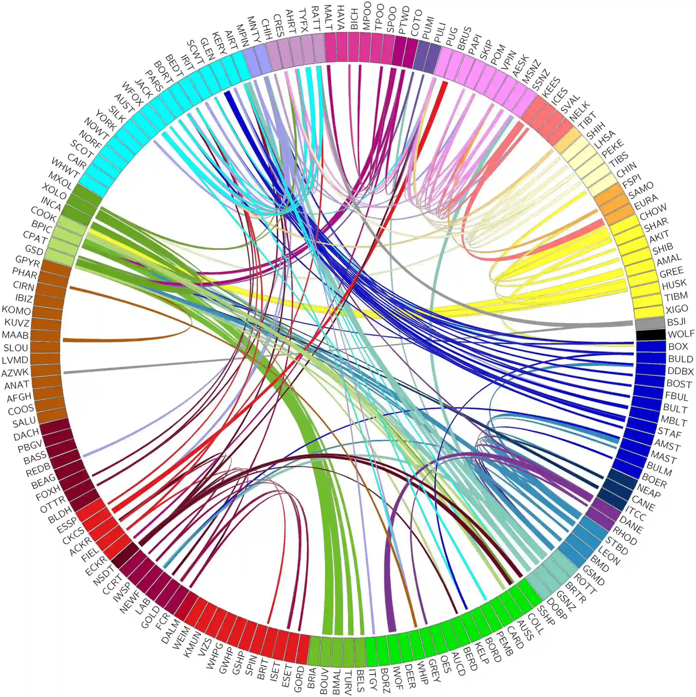
Доказательства смешения между кладами были обнаружены у 117 пород. 30% этих пород имеют общие корни только с только породой, не входящей в их кладу. Таким образом, более половины (54%) пород, входящих в 23 установленных клада, имеют общие гаплотипы с максимум одной породой за пределами своего клада, что указывает на создание породы путем отбора на основе первоначальной популяции-основателя а не в результате недавнего смешения. 6 из 161 пород разделяют обширные гаплотипы со многими (более 8) различными группами, что говорит о недавнем создании этих пород из множества или о том, что они представляют собой популярный компонент современной породы. Филогенетический анализ часто применялся для определения взаимоотношений между породами собак при понимании того, что древовидная структура не может полностью объяснить развитие пород. Исследования показали, что отдельные мутации приводят к появлению узнаваемых признаков, которые являются общими для пород из разных кладов, что позволяет предположить, что смешение между кладами является заметным источником морфологического разнообразия. Исследования неравновесия связей и обмена гаплотипами позволяют предположить, что в регионах генотипа длиной 10-15 кб, существует небольшое количество гаплотипов, общих для большинства пород, в то время как породная специфичность проявляется только в крупных гаплотипах. Большинство пород собак либо не имеют общих крупных гаплотипов за пределами своего клада, либо имеют общие гаплотипы только с одной «удаленной» породой. Небольшое количество пород, у которых значительное сходство гаплотипа за пределами своего клада, могли быть недавно образованы из множества разнообразных пород или могли быть популярными «вкладчиками» в другие породы.
Исследователями из Мексики в 2014 году проведена работа по определению генетического разнообразия породы догов с использованием десяти микросателлитов с целью изучения влияния селекции на породную линию. На основании генетического анализа 88 особей ( предполагается, что они все живут в Мексике) было выявлено три кластера. Авторы ожидали найти два (делая предположение, что они будут характеризовать «американскую» и «европейскую» линии селекции догов), однако примерно треть анализируемой выборки выявила свое внутригрупповое генетическое сходство, не отнесенное к известным географическим «типам». Вывод в работе дословно звучит таким образом: «Полученные нами результаты свидетельствуют о полезности использования микросателлитов в практике селекции и отбора. В то же время важно оценивать генетические характеристики внутри пород для поддержания селекционных линий. Кроме того, наши результаты подтверждают результативность использования STR в качестве мощного инструмента для правильного присвоения каждому типу своего статуса. Наконец, следует также отметить полезность такого рода исследований для снижения генетических заболеваний путем выявления факторов риска. Насколько нам известно, это первое сообщение о генетическом разнообразии в породах немецкого дога.»
Действительно, в научных работах по генетике породы ни до, ни после этой публикации описания различий внутри поророды не было. Однако, с точки зрения выводов, можно помочь авторам, которые, судя по-всему, не знакомы с историей происхождения породы.
Исторически линии американских догов (чьих мексиканских потомков анализировали авторы работы) имели тесную связь с bloodhounds (породой собак, использовавшуюся для несения охраны, предки которых имеют российское происхождение). Связи с современными гончими по кровяному следу они не имеют, кроме названия. Один из кластеров может быть отражением факта наследования исторических американских кровей породы. После формализованного создания клуба в Германии начался поток экспорта собак за океан в богатеющие штаты. Точное количество перемещенных догов неизвестно, как и их доля в увеличивающейся популяции за океаном, однако можно с уверенностью сказать, что все современные американские доги имеют значительное количество кровей из Европы. Это объясняет наличие второго кластера. Третий кластер может быть как следствием смешения первых двух, так и результатом ауткроссинга с использованием других пород в конце XIX и начале XX века.
В любом случае, факт генетической дифференциации внутри породы с использованием современных генетических методов позволяет надеяться на появление в будущем методов анализа, результатом которых будет дифференциация по линиям крови и перспектива выделения (создания) линий, наследущих долгожительство или отсутствие характерных для породы заболеваний.
Формула цвета
Цвет и его распределение по шерсти и коже собаки определяется выработкой двух пигментов.
Несколько локусов - Agouti (A), Extension (E) и Black (K) контролируют когда и где на теле собаки вырабатывается эумеланин (черный/коричневый пигмент) или феомеланин (красный/желтый пигмент). Межклеточные сигнальные пути сообщают меланоциту, какой тип меланина производить. Зависимое от времени, генно обусловленное переключение выработки пигментов может привести к появлению одного волоса с полосами эумеланина и феомеланина. Пространственно-зависимая, генно обусловленная, передача сигналов приводит к появлению участков тела с разным уровнем каждого пигмента.
Ген MC1R контролирует рецептор на поверхности меланоцитов. В активном состоянии он заставляет меланоцит синтезировать эумеланин, в неактивном вместо него вырабатывается феомеланин. Ген ASIP связан с MC1R и инактивирует его активное состояние, тем самым вызывая синтез феомеланина. Ген DEFB103, в свою очередь, не позволяет ASIP ингибировать MC1R, тем самым увеличивая синтез эумеланина.
Немецкие доги являются носителями следующих аллелей:
A локус (ген ASIP)
Агути-сигнальный белок кодируется геном ASIP. Отвечает за распределение пигмента меланина у млекопитающих. Агути взаимодействует с рецептором меланокортина 1, чтобы определить, продуцирует ли меланоцит (пигментная клетка) феомеланин (красно-желтый пигмент) или эумеланин (коричнево-черный пигмент). Такое взаимодействие отвечает за образование отчетливых светлых и темных полос в волосах животных, таких как агути, в честь которых назван ген. Сигнальный белок агути (ASIP) является конкурентным антагонистом с альфа-меланоцитарстимулирующим гормоном (α-MSH), который связывается с рецептором меланокортина 1 (MC1R) белками. Активация α-MSH вызывает выработку более темного эумеланина, в то время как активация ASIP вызывает выработку более красного феомеланина. Это означает, что там, где во время экспрессии агути, часть волос, которая растет, будет желтой, а не черной.
Интенсивность цвета, обусловленного феомеланином, сильно варьируется в породах с рецессивным рыжим или соболиным окрасом. Например, ирландские сеттеры имеют неизменно насыщенную рыжую шерсть, а у длинношерстных пшеничных терьеров она варьируется от кремовой до соболиной. Известно, что многие породы со сплошной белой или кремовой шерстью имеют рецессивный рыжий окрас, включая бишон фризе, самоедов, вест-хайленд-уайт-терьеров и белых немецких овчарок. За десятилетия исследований раскрыть генетическую основу вариаций интенсивности феомеланина у собак оказалось неожиданно сложно. Изначально предполагалось, что экстремальное разбавление феомеланина у собак, приводящее к белому или кремовому окрасу шерсти, контролируется в основном одним локусом, как и у некоторых других видов млекопитающих. На самом деле крайняя степень интенсивности феомеланина шерсти является мультигенным признаком в разных породах собак, а возможно, и внутри них. Недавние исследования выявили несколько генетических вариантов, способных объяснить некоторые вариации интенсивности феомеланина шерсти в определенных породах, разбавление феомеланина является мультигенным признаком как в рамках одной породы, так и внутри нее. Проведенное геномное исследование ассоциаций (GWAS), выявило пять геномных регионов (CFA15 29.8Mb, CFA20 55.8Mb, CFA2 74.7Mb, CFA18 12.9Mb, CFA21 10.9Mb) значимо связанных с интенсивностью феомеланина в шерсти, и показало, что эти локусы способны объяснить около 70% вариаций интенсивности феомеланина шерсти у собак смешанных и чистокровных пород.
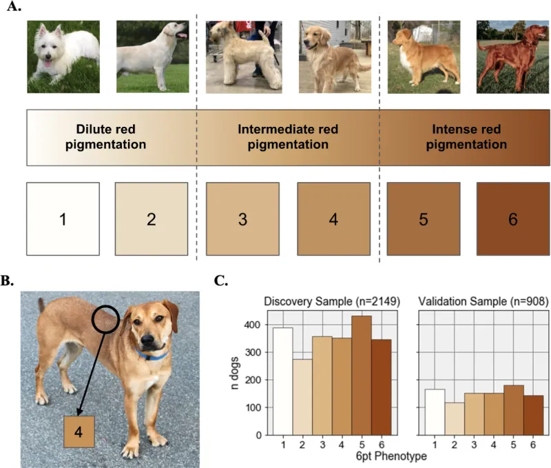
распределение окрашенных эумеланином и феомеланином волос по телу.
Ay - палевый (у других пород - соболиный окрас)As, он же А - (существование не подтверждено) черный или темно-коричневый (ослабленный черный) эумеланин по всему волосу и телу
Aw - (не подтвержден у догов) «волчий соболь», эумеланиновые и феомеланиновые чередующиеся полоски вдоль волоса
At - (очень редко у догов) - черный c коричневыми пятнами или наоборот по всему телу
E локус (ген MC1R)
Ген рецептора меланоцит стимулирующего гормона (MSHr) - melanocortin receptor 1 (MC1R). У догов определяет наличие меланистической маски, наследуется аутосомно-доминантный признак, является фиксированным признаком.
наличие и распределение эумеланина по телу.
Em - эумеланиновая маска на морде у палевых. Цвет на теле определяется А локусомE - (не подтвержден у догов) черный или коричневый по телу
ebr - (не подтвержден у догов) тигровый
e - (не подтвержден у догов) только феомеланин
К локус (ген CBD103)
Вариант K гена CBD103 способствует синтезу эумеланина (черного пигмента), блокируя экспрессию гена agouti в локусе A, который в противном случае ингибировал бы выработку эумеланина MC1R. Альтернативный вариант k гена CBD103 нарушает нормальную функцию гена CBD103, обеспечивая экспрессию гена agouti (локус A) и ингибируя синтез черного пигмента. Поскольку K является доминантным, для подавления экспрессии гена agouti требуется только одна копия K.
Распределение черного эумеланина по телу.
K - черный эумеланин у догов, феумеланин подавленkbr - тигровый (черные полосы на ослабленном эумеланине)
k - феумеланин производится, распределение окраса определяется локусами А и Е
Локусы Merle (M), Harlequin (H) и Spotting (S) отвечают за появление пятнистости и белых отметин. Аллели (M) и (H) вызывают неравномерное уменьшение количества меланина до половины (M), нуля (H) или всех пятен (double merle). Аллели, присутствующие в локусах Spotting (S), Ticking (T) и Flecking (F), определяют белые отметины.
Немецкие доги являются носителями следующих аллелей:
H локус (ген PSMB7)
Картирование локуса арлекина H выявило участок в 25 кб, где все мраморные доги гетерозиготны по общему гаплотипу. Этот участок содержит один ген, PSMB7, который кодирует β2 каталитическую субъединицу протеасомы. Анализ последовательностей выявил кодирующий вариант в экзоне 2, который сегрегационно связан с мраморным узором. В результате происходит замена выработки валина на глицин..
Арлекиновый окрас. Встречается только у догов. Модифицирует локус (M).
H - арлекин - в области между пятнами подавляется выработка меланина, остаются пигментированные пятна на белой основе.h - мерль
M локус (ген SILV)
SILV (также известный как Pmel17) кодирует фибриллярную решетку, на которой меланин откладывается в эумеланосомах, и сильно экспрессируется во время эмбрионального развития. Криптический сплайс-акцепторный сайт внутри инсерции приводит к включению последовательности ретротранспозона в мРНК SILV у собак породы мерль.Вариабельность числа ди-нуклеотидных повторов в пределах вставки приводит к появлению множества мутантных транскриптов SILV. Усечение поли-А хвоста ретротранспозона обеспечивает правильный сплайсинг и нормальную пигментацию. Случайные темные пятна, характерные для мерля и мрамора, могут быть результатом соматических ошибок репликации во время развития, которые усекают поли-А хвост белка.
ген Мерля. Влияет на интенсивность эумеланина, пятна шерсти окрашены или обесцвечены.
H - арлекин - в области между пятнами подавляется выработка меланина, остаются пигментированные пятна на белой основе.h - мерль
M - мраморно-голубой окрас (черные и/или темно-серые пятна на серебристом, сером или голубоватом фоне)
m - сплошной окрас. Пятна обесцвечены до основного цвета.
Mc (новые исследования) латентный мерль - нетипичный оттенок черного/шоколадного
Ma (новые исследования) нетипичный мерль - видимый рисунок Мерля
S локус (ген MITF)
MITF кодирует транскрипционный фактор, который контролирует развитие и миграцию меланоцитов. Экспрессия белка MITF является существенным фактором пигментации шерсти. Потеря пигмента вызвана отсутствием меланоцитов, а не отсутствием биохимических реакций, необходимых для синтеза пигмента.
наличие белых пятен, неполное доминирование гена. Размер и расположение белых пятен также определяется MITF-M промоутером.
S - вся шерсть пигментирована, возможно белое пятно на груди, кончиках лап и хвостеsi (irish spotting) - белые пятна на морде, на лбу, шее, груди, ногах, лапах, кончике хвоста
sp - (очень редко) пиболд - белый окрас морды, шеи, груди, ног, живота, хвоста
sw - (очень редко) полный белый окрас
Локусы, определяющие оттенки окраса немецкого дога:
Brown (B), Albino (C), Dilution (D)
B локус (ген TYRP1)
Ген TYRP1 (Tyrosine related protein 1), расположенный в хромосоме 11, отвечает за производство коричневого или черного эумеланина.
определяет синтез эумеланина и превращение пигмента из черного в коричневый. Влияет на окрас шерсти и кожи (включая нос и подушечки лап)
В - черный эумеланин (цвет)b - шоколадный (очень редко в наши дни) эумеланин (цвет)
С локус (ген TYR)
Кодирует фермент тирозиназу, которая катализирует окисление l-дигидрокси-фенилаланина (DOPA) до DOPA-хинона, предшественника как эумеланина, так и феомеланина. Гипотеза о том, что варианты TYR могут модулировать интенсивность феомеланина шерсти у собак, получила окончательное подтверждение, когда была выявлена миссенс-мутация в гене TYR как причина уникального температурно-зависимого фенотипа разбавления пигмента (акромеланизма) у одной собаки. Другое исследование подтверждает эту гипотезу о связи между собачьими вариантами TYR и не зависящим от температуры изменением интенсивности феомеланина шерсти. У многих видов животных некоторые гены, расположенные рядом с TYR на CFA21 (включая NOX4 и GRM5, также вовлечены в пигментацию кожи, поэтому возможно, что другие варианты, не относящиеся к гену TYR, могут быть движущими или вносить вклад в сигнал ассоциации на CFA21.
определяет интенсивность пигментации феомеланина.
C - нормальная выработка пигментаСch - (очень редко) шиншилла, снижение уровня желтого и красного
сa - (теоретически у догов) альбинос
D локус (ген MLPH)
Кодирует белок под названием меланофилин, который отвечает за транспортировку и фиксацию меланинсодержащих клеток. Мутация в этом гене приводит к неправильному распределению этих клеток, вызывая размытый цвет шерсти. Мутация, вызывающая разбавление окраса, является рецессивной, и для получения разбавленного окраса шерсти необходимы две копии мутировавшего гена (аллель D или локус D). Мутация MLPH затрагивает пигменты эумеланин и феомеланин. Эти пигменты определяют окрас собаки. Черные, коричневые и желтые собаки могут быть подвержены влиянию локуса D. Однако эффект разбавления более выражен у черных собак. Разбавленная черная собака становится известной как голубая. В разных породах этот признак окраса называется по-разному: голубой, угольный, сланцевый или серый. Разбавленную шоколадную собаку часто называют лиловой или изабелловой, а разбавленную желтую - шампанской. Собаки с разбавленным фенотипом имеют генотип d/d или d2. Они кодируются как B/B, B/b или b/b и E/E, E/e или e/e соответственно по локусам E и B, которые определяют цвет шерсти.
«ослабление» окраса.
D - выраженный окрас - черный или коричневый эумеланин, красноватый или оранжевый феумеланинd - серо-голубой ослабленный черный эумеланин, «изабелловый» коричневый эумеланин, песочно-желтый феумеланин, высветление глаз
T локус (ген ???)
Крап и мерле: в чем разница? Крап добавляет пигмент к белым пятнам, а мерль удаляет пигмент из участков с черной или коричневой шерстью. Оба вида могут создавать голубоватую или сероватую шерсть и являются одними из самых легко путаемых окрасов. Крап - это небольшие точки пигментированного волоса, расположенные на участках с белой шерстью. Он создает умеренное или большое количество пигментных точек на любом белом фоне. Для проявления Крапа собаке необходимо наличие белых пятен (которые могут быть от пиболда, ирландского пятнистого или белоголовых). Без белого цвета в шерсти собака не может выразить Крап. Крап никогда не удаляет пигмент. Крап может только добавить пигмент в белую шерсть, где его не должно быть. При рождении вы не можете увидеть, есть ли у собаки крап. Сначала все белые пятна будут сплошными белыми. Только полностью окрашенные пятна, которые останутся такими, присутствуют уже при рождении. Крап появляется позже и не затрагивает те участки, которые уже пигментированы при рождении. Крап начинает постепенно образовываться на белых участках шерсти собаки уже через пару недель после рождения. Все крапинки на конкретной собаке будут иметь именно тот цвет, который был бы у собаки на их месте, если бы не белая шерсть. Белый цвет скрывает рисунок собаки. А крап возвращает часть этого цвета, утраченного из-за белого. Крап - это маленькие окошки в белом мехе, которые позволяют нам увидеть, что находится «под» белым. У некоторых собак крап может быть минимальным, с несколькими разбросанными точками в белой шерсти. У других крап выражен сильно: больше всего точек сосредоточено на ногах и морде. Обычно мерле относится к мраморному рисунку, который ограничивается участками с пигментированной эумеланином шерстью, где он разбавляет мелкие точки или крупные пятна пигмента до более светлого цвета. В самом крайнем варианте мерль может даже удалить часть пигмента до белого цвета. Для проявления мерля собаке необходим эумеланин в ее рисунке. Отдельная собака может иметь только один из этих окрасов - черный, коричневый, голубой или лиловый. И без хотя бы некоторых участков с черным (или коричневым, голубым, лиловым, соответственно) окрасом в рисунке собака не может выразить мерль. Сплошной белый или рыжий пес все еще может быть невыраженным мерле и передавать этот признак своему потомству. Но вы не сможете обнаружить это, просто взглянув на собаку. Мерль никогда не добавляет пигмент. Белая шерсть останется белой. Мерль удаляет пигмент только в тех местах, где вы ожидаете увидеть эумеланин. Мерле разбавляет или осветляет некоторый черный (или коричневый, голубой, сиреневый) пигмент в более или менее случайных местах и превращает его в голубоватый, сероватый, коричневатый или даже беловатый цвет. Если у собаки выражен мерлевый рисунок, он будет заметен при рождении. Некоторые узоры могут потемнеть с возрастом, но они уже будут присутствовать у новорожденного щенка. Породы собак с мерлем, как правило, имеют большие участки черной или коричневой шерсти. Некоторые собаки имеют яркий и кричащий пятнистый рисунок, другие - твидовый с большими размытыми участками. Некоторые собаки имеют минимальный мерлевый рисунок, а некоторые варианты мерле могут создавать более равномерный рисунок до такой степени, что он даже может напоминать разбавление окраса. В любом случае, мерль не влияет ни на белые пятна, ни на рыжие отметины. В очень редких случаях мерль может разбавить некоторый красный пигмент. Но это исключения, которые встречаются очень редко.
определяет крап (наличие не подтверждено молекулярной генетикой)
T - (очень редко у догов) белый крап
t - без выбеления
Нестандартные окрасы
Дог - порода, испытавшая драматическое сокращение вариаций генетического многообразия вследствие контроля окраса, нашедшего отражение в стандарте.
Долгое время отбирались особи с пятью стандартными окрасами. Для этих окрасов отбирались психически уравновешенные особи, дружелюбные к человеку, другим домашним животным, способные выживать в урбанизированном социуме. Не так давно в генетический пул влились плащевые и серо-мраморные окрасы, ранее не отбиравшиеся строго по психлогическим критериям, а также по здоровью.
Нестандартные окрасы, встречающиеся как выщепление генов от стандартных даже получали (свои, впрочем, непризнанные) имена:
Merlikin/merlequin - белые с серыми пятнами или серомраморные с ирландской пятнистостью,
Plattenhund - пегий (белые пятна на черной основе,
Fawnequin - арлекин с рыжими пятнами,
Brindlequin - арлекин с тигровыми пятнами,
Mantle/Boston - ирландская пятнистость с белым на морде, ногах, груди, шее и кончике хвоста,
Porcelaine - арлекин не с черными пятнами («тигровый арлекин», «голубой арлекин», «палевый арлекин»).
И, конечно, огромное разнообразие цветов появляется при скрещивании нестандартных окрасов, даже если один из родителей был окрашен стандартно:
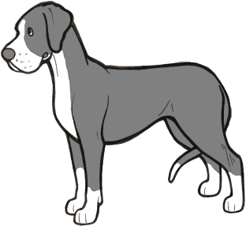
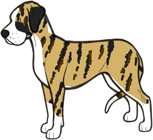
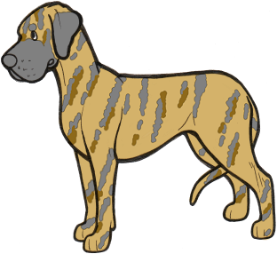

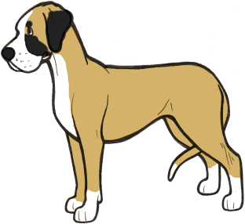
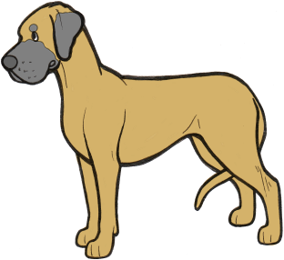
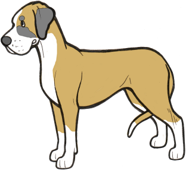
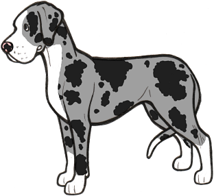

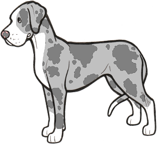
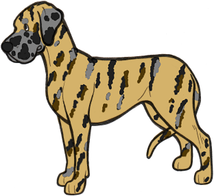
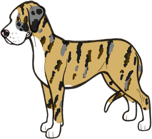
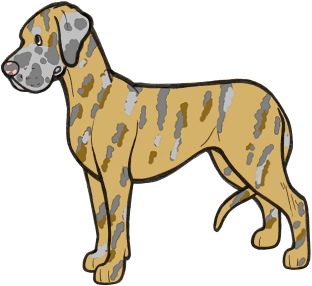
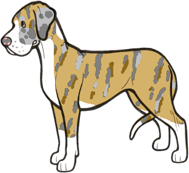
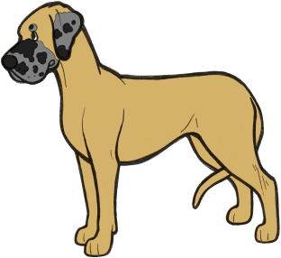
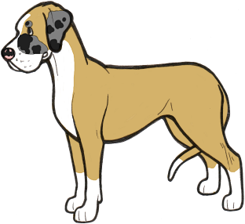
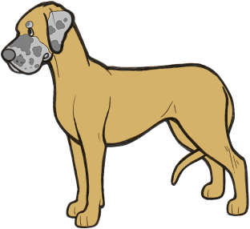
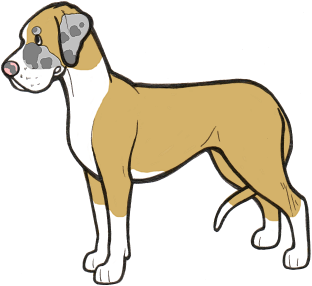
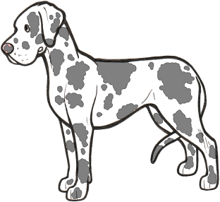
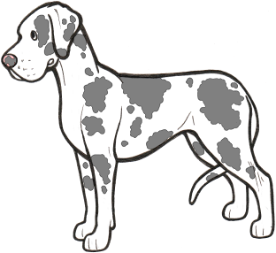
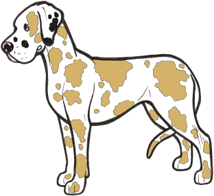
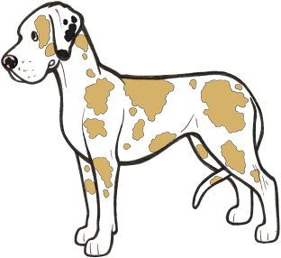
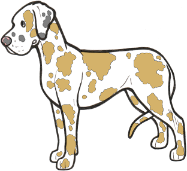
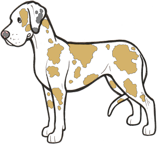
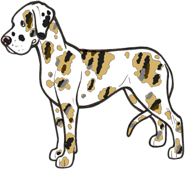
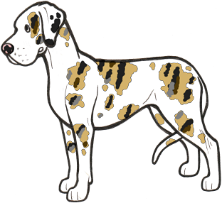
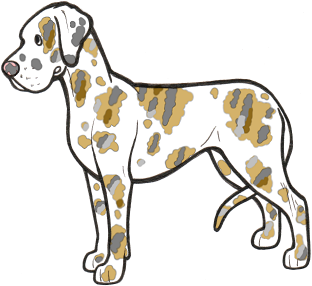
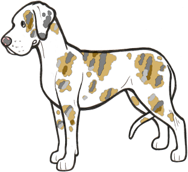
Коллекция рисунков представлена Jess Chappel
У собаки есть два типа фоторецепторов колбочек, что делает ее дихроматом. Колбочки имеют максимальную чувствительность в спектре между 429 и 555нм. Поведенческие исследования показывают, что зрительный мир собак состоит из желтого, синего и серого цветов, но им трудно различать красный и зеленый, их цветовое зрение эквивалентно красно-зеленому дальтонизму у людей (дейтеранопия). Когда человек воспринимает объект как «красный», этот объект кажется собаке «желтым», человеческое восприятие «зеленого» кажется собаке «белым», оттенком серого. Эта белая область (нейтральная точка) находится около 480нм, для людей она - сине-зеленая. Для собак длины волн света , превышающие нейтральную точку, неотличимы друг от друга, все они превращаются в желтый.
Собаки используют цвет вместо яркости, чтобы различать светлый или темно-синий/желтый. Они менее чувствительны к различию в оттенках серого, чем люди, и также менее чувствительны к яркости (вдвое), чем люди. Зрительная система эволюционировала, чтобы помочь умелой охоте. Хотя у собак острота зрения низкая, их чувствительность к движущимся объектам очень высока. Собаки могут различать людей на расстоянии от 800 до 900 метров; однако это расстояние уменьшается вдвое, если человек неподвижен.
Как сумеречные охотники, собаки часто полагаются на свое зрение в условиях низкой освещенности: у них очень большие зрачки, высокая плотность палочек в ямке, повышенная частота мерцания tapetum lucidum. Тапетум - это отражающая поверхность за сетчаткой, которая отражает свет, чтобы дать фоторецепторам второй шанс уловить фотоны. Глаза собак разных пород имеют разные формы, размеры и конфигурации сетчатки. Длинноносые породы обладают «полосой зрения» - широкой областью, которая проходит по ширине сетчатки и дает им очень широкое поле зрения. Поле зрения по горизрнтали достигает 270° (по сравнению с 180° у человека).
Частотный диапазон собачьего слуха составляет от 16-40 Гц (20–70Гц для человека) и до 45–60 кГц (13–20кГц для человека), что означает, что собаки могут улавливать звуки далеко за пределами верхнего предела слухового спектра человека. У собак подвижный слух, что позволяет им быстро определять точное местоположение звука. Восемнадцать или более мышц могут наклонять, вращать, поднимать или опускать ухо собаки. Собака может определять местоположение звука намного быстрее, чем человек, а также слышать звуки на четырехкратном расстоянии по сравнению с человеком.
В то время как в человеческом мозге преобладает большая зрительная кора, в мозгу собаки преобладает большая обонятельная кора. У собак примерно в сорок раз больше чувствительных к запаху рецепторов, чем у людей, общее число обонятельных рецепторов достигает 125 миллионов и даже 300 миллионов. Рецепторы расположены на площади размером с карманный носовой платок (по сравнению с 5 миллионами на площади размером с почтовую марку для человека). У собаки подвижные ноздри, которые помогают ей определять направление запаха. В отличие от людей, собаке не нужно наполнять легкие для анализа запахов. Нос собаки имеет внутри костную структуру, которая позволяет вдыхаемому воздуху проходить над костной полкой, и к ней «прилипают» молекулы запаха. Воздух над этой полкой не вымывается, когда собака нормально дышит, поэтому молекулы запаха накапливаются в носовых полостях, и запах растет с интенсивностью, позволяя собаке способность улавливать самые слабые запахи.
У собак около 1700 вкусовых рецепторов по сравнению с примерно 9000 у людей. У собак также есть вкусовые рецепторы, которые настроены на воду, но не встречаются у людей. Это вкусовое ощущение проявляется на кончике языка, который она изгибает, чтобы захватывать воду. Когда собака ест соленую или сладкую пищу, чувствительность к вкусу воды увеличивается.
Собаки регулируют температуру своего тела посредством дыхания и потоотделения через лапы.
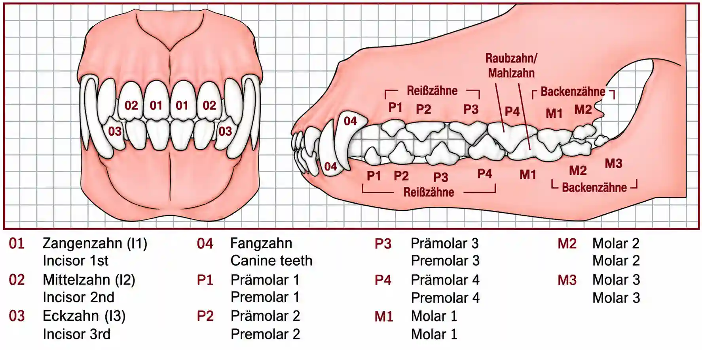
Прикус немецкого дога называется ножницами. Это значит, что в сомкнутом состоянии верхние резцы заходят плотно спереди нижних на расстояние около трети высоты зубов. Стандарт определяет формулу в 42 крепких, здоровых зуба, из которых 20 располагаются на верхней челюсти, а 22 - на нижней. Премоляры Р1 на обеих сторонах могут отсутствовать. Часть специалистов породы считает премоляры рудиментарными.
Современные компьютерные технологии дают очень реалистичные изображения, которыми можно пользоваться для изучения строения собаки, хотя в медицинских целях лучше, конечно, использовать анатомические атласы. Nadine Szczesny (Deutsche Doggen von der Perle am Rhein) визуализировала внешний вид породы, используя методы Artificial Intelligence (AI).